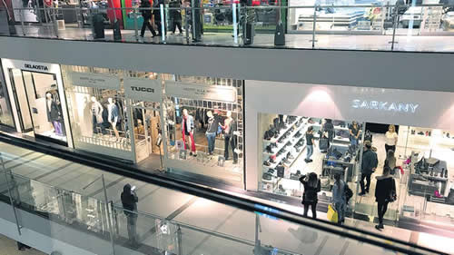

Real Chubut - Agencia de Noticias


Estanflación como en 2016

La caída del PIB en el tercer trimestre fue del 3,5 por ciento, que se suma a la baja de 4 puntos que se había anotado en el trimestre anterior. En nueve meses la contracción llega a 1,4 por ciento, pero hasta el FMI dice que bajará más.
Por segunda vez durante el gobierno de Cambiemos, la economía entró formalmente en recesión en el tercer trimestre del año. El Producto Interno Bruto (PIB) se contrajo 3,5 por ciento respecto de igual período del año pasado, lo que se suma a la caída del 4 por ciento interanual del segundo trimestre, informó ayer el Indec. Técnicamente se considera que una economía está en recesión cuando registra dos trimestres consecutivos en baja. Si a eso se agrega una alta inflación, el proceso se denomina “estanflación”, que es la situación actual de la Argentina. La destrucción del Producto asciende al 1,4 por ciento interanual para el acumulado de los primeros nueve meses, mientras que las estimaciones oficiales y del Fondo Monetario auguran cerrar 2018 con un retroceso de entre 2,4 y 2,6 por ciento, mientras que la inflación se ubicará en torno al 48 por ciento. El desplome del consumo público y privado, de la inversión y las importaciones explican el pésimo desempeño de la actividad económica entre julio y septiembre, lapso dentro del cual se registró una fuerte devaluación de la moneda hasta tocar los 42 pesos y un alza de tasas de interés hasta 73 por ciento para contener la corrida cambiaria.
El primer proceso de destrucción de riqueza al que llevaron las políticas del macrismo fue en 2016. Comprendió el segundo trimestre (abril-junio) con una caída del PIB del 3,4 por ciento, el tercer trimestre (-3,8 por ciento) y el cuarto (-2,1 por ciento). Según las estimaciones del Gobierno plasmadas en el Presupuesto 2019 y en las proyecciones del FMI, esta recesión será aún más extensa y profunda, llegando a dilatarse al menos hasta junio próximo. En términos de deterioro económico y social, la crisis actual será más delicada porque la mayoría de los indicadores siguen por debajo de los niveles que tenían en 2015, con lo cual nunca hubo una recuperación que permitiera retomar aunque sea el punto de partida.
El Gobierno redobló para el año próximo la apuesta a un modelo de fuerte ajuste fiscal y contracción monetaria para lograr el déficit cero, con lo cual aspira a asegurarles al FMI y a los inversores privados el repago de la deuda. El resultado de esa estrategia es una fuerte caída de la actividad, potenciada por una corrida cambiaria que elevó en un ciento por ciento el valor del dólar, una sequía que complicó la cosecha exportable y el flujo de divisas y un portazo de los mercados financieros al financiamiento del Estado.
La oferta global de bienes y servicios, compuesta por la producción nacional más las importaciones que equivalen a la capacidad instalada, se retrajo en el tercer trimestre 5,1 por ciento interanual a precios constantes. El resultado se explica por “la caída del 3,5 por ciento del PIB y de 10,2 por ciento en las importaciones de bienes y servicios reales”, detalla el informe del Indec. En la demanda global se destacan en el trimestre las disminuciones del 11,2 por ciento en la formación bruta de capital fijo (inversión), de 4,5 por ciento del consumo privado, de 5 por ciento del consumo público y de 5,9 por ciento de las exportaciones de bienes y servicios reales. Pese a que la caída del PIB fue algo menor respecto al -4 por ciento interanual del trimestre anterior, en términos desestacionalizados hubo caídas entre el tercer y segundo trimestre: consumo privado (-4 por ciento), consumo público (-1,5 por ciento), inversión (-8,1 por ciento) e importaciones (-7,5 por ciento).
Nunca arreció la lluvia de inversiones prometida por Cambiemos como motor de crecimiento y este año, producto de la desprotección del mercado interno y el congelamiento del consumo, se contrajo en todas sus variantes. Según explicó el Indec, se registraron bajas de 1,5 por ciento en la inversión en construcciones, de 2,4 por ciento en “otras construcciones”, de 13,3 por ciento en maquinaria y equipo y de 36 por ciento en equipo de transporte. En este caso la apuesta oficial fue a los programas de Participación Público-Privada, que el Gobierno congeló ayer por la disparada del riesgo país. “Dentro de maquinaria y equipo, el componente nacional decreció 18,7 por ciento y el componente importado, 10,5 por ciento. En equipo de transporte el componente nacional se retrajo 35,3 y el importado, 36,7 por ciento”, según el informe que difundió el Indec.
La sequía se hizo sentir en el valor agregado del sector de agricultura, ganadería, caza y silvicultura, que en conjunto decreció 5,2 por ciento en el tercer trimestre respecto a igual lapso del año anterior. Por su parte, la pesca exhibió un crecimiento interanual de 7,3 por ciento y la explotación de minas y canteras cayó 0,1 por ciento. La industria manufacturera, que junto con la construcción son las actividades más golpeadas en los últimos tres años, tuvo una baja en el tercer trimestre de 6,6 por ciento. La construcción mostró una baja de 0,8 por ciento y la actividad del sector servicios (electricidad, gas y agua) creció 1,4 por ciento. El comercio mayorista y minorista y reparaciones evidenciaron una caída de 8,9 por ciento, pero la intermediación financiera y de los otros servicios observó un crecimiento de 5,1 por ciento.
Fuente: Pagina 12